Tokang Joomla TemplateDocumentation 1.0
- Created: May 20, 2021
- latest Update: May 20, 2021
- By: themesoul
Thank you for purchasing my theme. If you have any questions that are beyond the scope of this help file, please feel free to Messages Me. Thank you very much! This documentation was made only with the Documenter (except the images)
1. Installation
1.1 Quickstart Installation
We are going to see the Quickstart installation methods both on the server and the localhost. So, let's get started.
1.1.1 Quickstart installation on a localhost
For localhost quickstart installation, you can use any local server software you want like MAMP, WAMP, XAMPP or others. Start the localhost software with the web (e.g. Apache/NGINX) and database (MySQL) servers inside it. The initial work is done.
Step 1: Copy the Quickstart pack to the localhost
First copy the Quickstart zip file to the htdocs folder of the local server. Extract the Quickstart zip file there.
Step 2: Start the installation by visiting the localhost address
Now visit your localhost URL (address) on a browser. Ex: Localhost/YourFileName. A Joomla installation window tabbed as Configuration will appear. Then click next
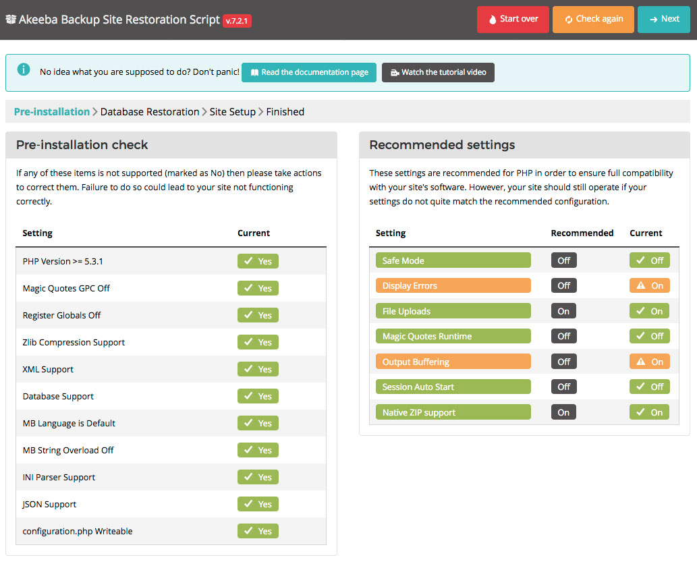Step 3: Database Restoration
Enter database server host name, usually with "localhost", then enter the username and password of the database. Now set a database name and click next.
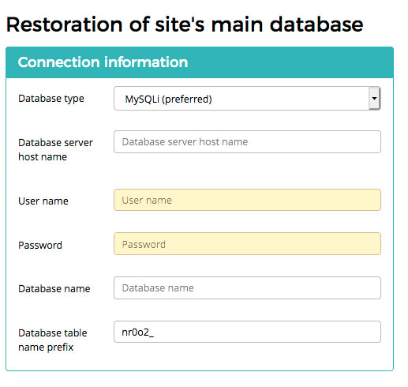
Now you will see the database restoration is being processed on your screen
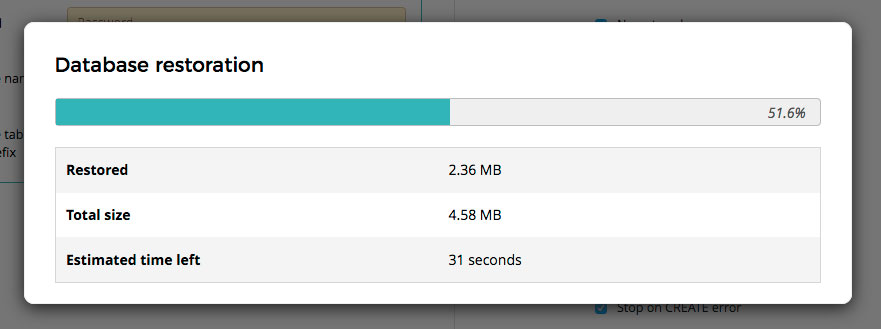 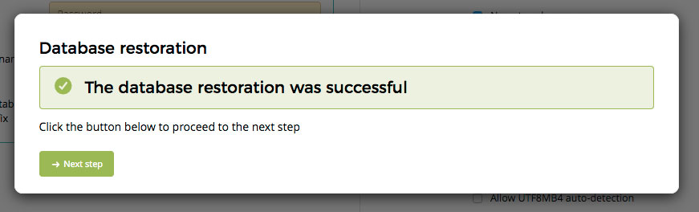Once completed, you could continue by pressing next step button
Step 4: Site Setting
Enter your site name, email and most importantly, enter username and password. After that, click next.
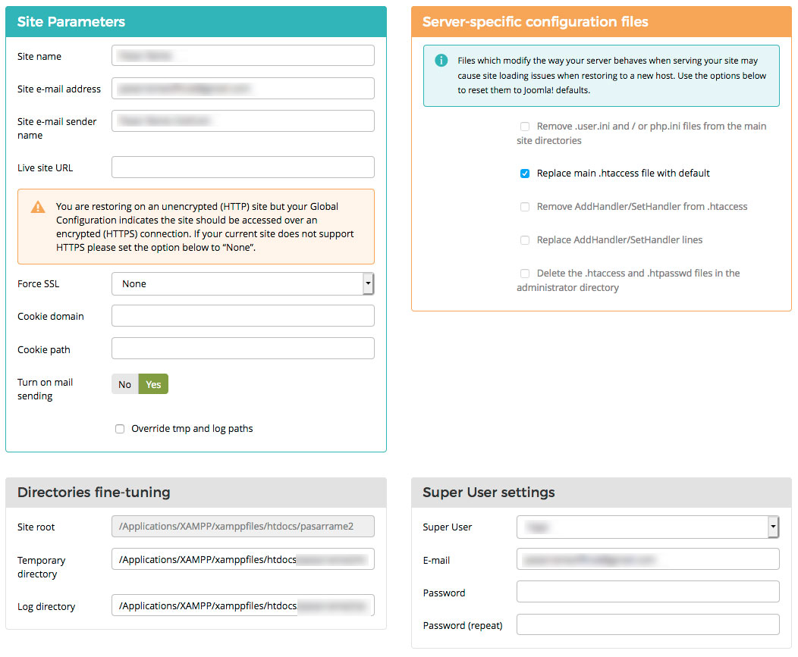
Now remove the installation directory by pressing "remove installation directory" button
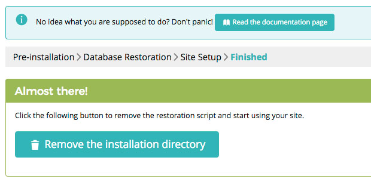Step 5: Done
Now go to localhost/YourFileName/administrator to access Joomla and your installed template. Or you can click the administrator button to directly access it.
1.1.2 Quickstart installation on a server with cpanel
To install the Quickstart pack on a web server, you need to upload the the package/extracted files to the server. In order to transfer files to the web server from your computer, you can use an FTP client for example: Filezilla. Now unzip the Quickstart pack. You will get several files and folders.
Step 1: Upload the Quickstart pack to the server
If you use cPanel, you can directly upload the Quickstart zip file to the server to the public_html directory of your web server. Then you can unzip it there.
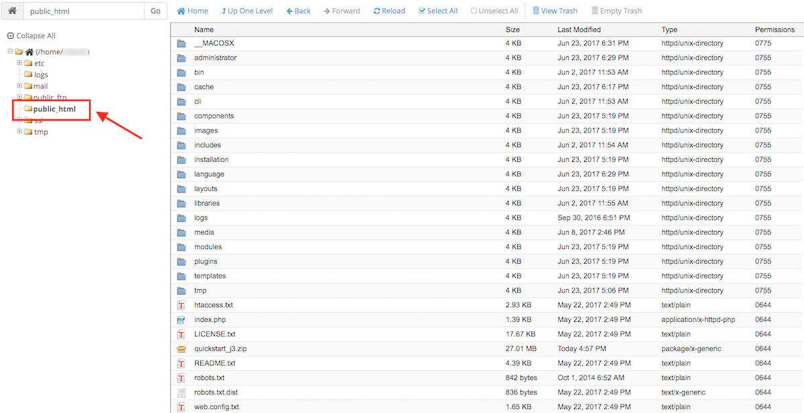Step 2: Create a new database and a database user
Create a MySQL database user and a database on your web server. You will need to enter these (username, password and the database name) in the ‘Database Configuration’ step while installing the Quickstart pack.
Step 3 : Start the installation by visiting your website address/IP
Open your browser and navigate to your domain (i.e. http://mydomain.com) or depending on where you have uploaded the Joomla installation package. You will see the initial installation page (the Configuration tab). Now follow the installation process you have just experienced for localhost we’ve explained above.
1. Installation
1.2 Templates Installation
Step 1: Login to administrator
First of all you have to login to your Joomla control panel using your username and password.
Step 2: Go to extensions
Click extensions. On the top of the drop-down menu, click “Manage” and then select “Install”.
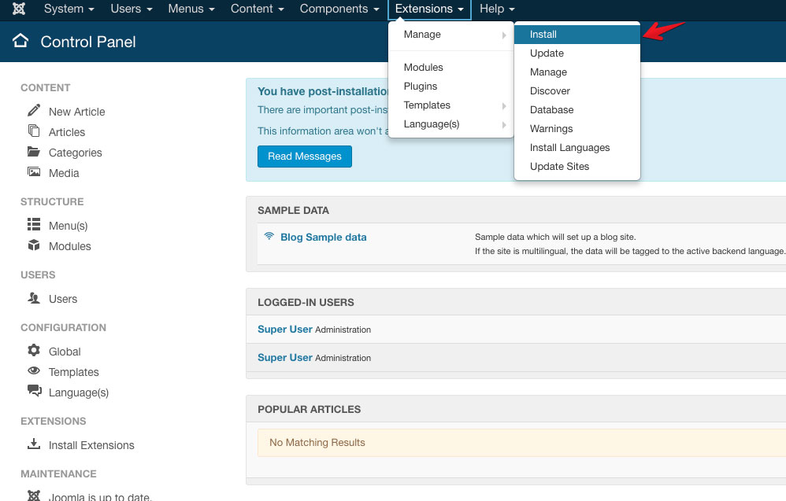Step 3: Upload File
On the Install page, select the option “Upload Package File”. Upload your template installation file using the drag-and-drop method or clicking the file browsing button. Joomla will automatically install the template upon completing the upload.
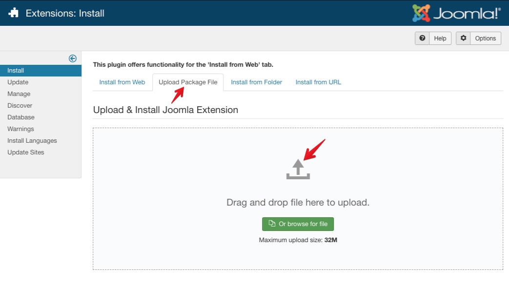
Step 4: Set as default
Set Tokang templates as the default template for all the pages of your site (that’s the entire website) by going to Extensions > Templates > Styles > click the star button.
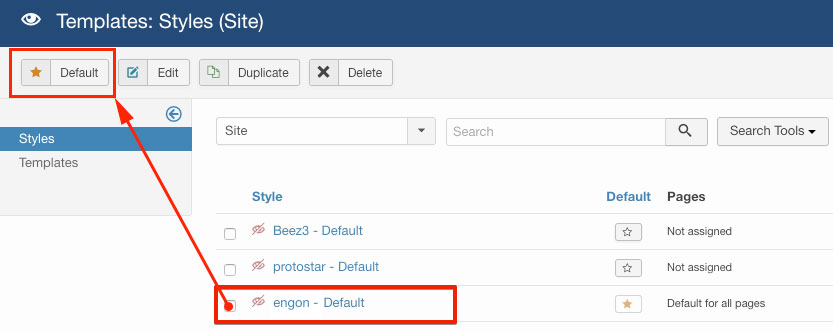
2. Header Customization
2.1 Top Bar (Homepage 2)
2.1.1 Get a Quote Button
- Go to extensions > Modules
- Go to Get a Quote Button
- Place it on "menu-right" position
- then Save
2.1.2 Email, Phone & Office Hour
- Similar to explained above steps, Go to extensions > templates
- Click Tokang
- Template Extensions
- Choose Basic
- Click Contact Info
- then you could fill your email and your phone number
- then Save
2.2 Logo Setting
Here you can set/upload a logo for your site. You can adjust the logo height as well. Also, you get an option to upload your own logo image and a dedicated mobile logo, in the format: PNG, GIF, JPG or SVG, with these simple following steps :
- Similar to explained above steps, Go to extensions > templates
- Click Tokang
- Template Extensions
- Choose Basic
- Click logo
- On logo type you could choose image or text logo format
- Upload your logo by clicking select media on logo field
- Adjust logo height at logo height option
- then Save
2.3 Sticky Header
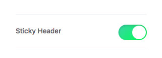
- Similar to explained above steps, Go to extensions > templates
- Click Tokang
- Template Extensions
- Choose Header
- Decide whether the header will be sticky or no
- then Save
3. Slider Management
This feature could be access from Component > Unite Slider
3.1 Unite Slider Main Setting
Once you created a slider, you can open the slider settings any time to manage any general settings per slider
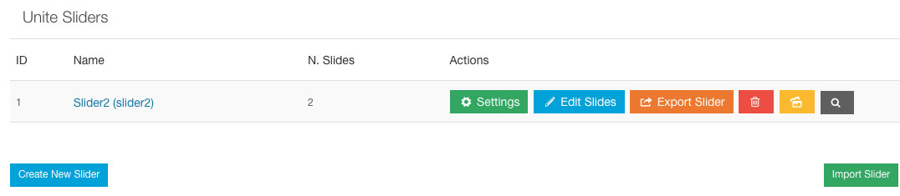 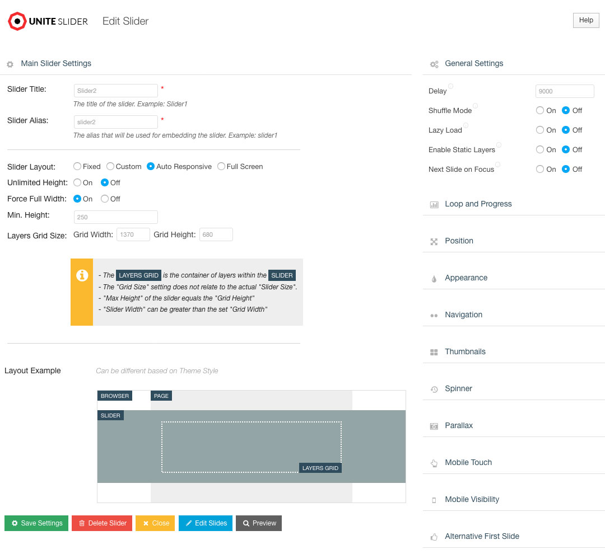- Slider Title : A Internal used Name for the Slider. Only for Backend Usage
- Slider Alias : An individual name of the slider. Dont use Speical chars and spaces here. This will be used for ShortCode embeding and for any other art for embeding and corresponding / link internal to the slider.
- Slider Layouts : there are options Fixed, custom, AutoResponsive and Fullscreen. For Tokang purposes, we use Fullscreen with these settings bellow :
- unlimited height : off
- Force Full Width : On
- Min height : 250
- Grid Width : 1370
- Grid Height : 680
3. Slider Management
This feature could be access from Component > Unite Slider
3.2 Slides Editor
To access slide editor, please go to to
- Component > Unite Slider
- Click edit Slides
- Click edit slide on one of existing slide items, if you want to edit existing slide items
- Click New Slide, if you want to add new slide
3. Slider Management
This feature could be access from Component > Unite Slider
3.3 J2store module as Slider
To access slide modules:
- Please go to extensions > modules
- Find module type J2Store Products display
- On Module tab. Set Sub templates > Carousel_slider, define your product sources, and complete the rest paramaters associated with the selected product sources
- On layout setting tab, set number of columns : 1, number of items at least : 1
- Make sure this modules is set to "Published"
- Save & close
- The final step is, load this module through sp page builder addon.
4. Homepage Management
To manage the homepage easily, you need to have installed SP Page builder
SP Page Builder is so powerful that you can create a website's whole structuralization with it. You can create your page layouts with generated addons and arranging them in a way you want. Sp Page builder poses amazing ease of accesses like add new row, Page creation and edit, Built-in page templates, addon listing, access to frontend editor, preview options, and much more exciting stuff.
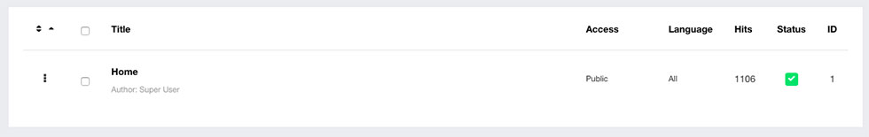
4.1 SP Page Builder Installation
How to Install SP Page Builder, follow these steps to install SP Page Builder
- Login to your Joomla backend
First, you have to log in to your Joomla admin dashboard using the username and password. The URL to access the administrator page is: www.yourdomain/administrator. - Extension Install
Now go to Extensions>>Install.
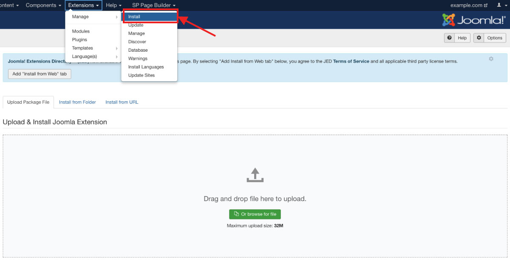 - File Upload
Now you have to upload the installation file. You can drag and drop the file or use the "browse for file" button to add the file - First Look of SP Page Builder
You will find SP Page Builder on the top in the admin menu. 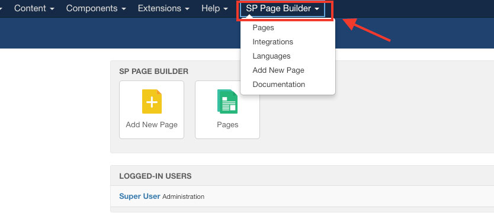
4. Homepage Management
To manage the homepage easily, you need to go to SP Page Builder > Pages > Home
4.2 About Us
Follow these steps below to manage this section :
- Create/add new Row
- Generate custom column : 7 + 5
- On first column, add an image addon with these following setting :
- Admin label : You should name the admin label by keeping the relevance to the purpose of the addon you have added. This will surely save you from a lot of hassles.
- Title : This option will allow you to add a title to the title. The purpose of the title is to express the naming of the section you just added to the addon. If you want to add the title, you just have to add it in the title text box, it will be automatically added to the addon section.
- Select Image : You can upload and select the images here.
- Style :use margin = 0px 0px 0px -60px
- On second column, add two text block addon and one button addon :
- About Us Title.
HTML element : H3, Font family : Rajdhani, Letter spacing : 3px; Title color: #1c5aae, Title font size: 20px. - HITEK stands for Workshop for Industrial Equipment
HTML element : H1, Title font size: 40px, Title margin top: 10, Title margin bottom: 40, content : place your content here - Read More Button
Button Text : Read More, and leave the other fields with the default setting
- About Us Title.
- Jangan lupa klik apply setiap melakukan perubahan pada setiap add-on
- Selanjutnya klik save
4. Homepage Management
To manage the homepage easily, you need to go to SP Page Builder > Pages > Home
4.3 Our Offer
Follow these steps below to manage this section :
- Create/add new Row
- Choose single column
- Go to row option > Style > padding : 0px 0px 150px 0px and select the background image here
- Go to column option, and set the margin to -550px 0px 0px 0px
- Now, Create nested row through column option panel > add new row
- Generate custom column : 5+7+12+6+6
- On 5 column, add two text block addon with these following setting :
- Our Offer Text
HTML element : H3, Font family : Rajdhani, Letter spacing : 3px; Title color: #1c5aae, Title font size: 20px. - Products and Services Text
HTML element : H2, Title font size: 68px, Title Line height: 68px; Title margin top: 20.
Style tab > Margin : 0px 0px 30px 0px
- Our Offer Text
- On 7 column, add one text block addon with these following setting :
- Section Description Text
Content : place your content here
- Section Description Text
- On 12 column, add empty space addon with these following setting :
- Empty Space gap : 70
- On first 6 column, add two feature box addon with these following setting :
- Special Purposes Machine Equipment
HTML element : H3, Font family : Rajdhani, Icon/Image Position : Before title, Title font size: 36px, URL Will Be Used For : Both, Layout Type: image, Feature Box Image : then select your image here - Technical training.
HTML element : H3, Font family : Rajdhani, Icon/Image Position : Before title, Title font size: 24px, URL Will Be Used For : Both, Layout Type: image, Feature Box Image : then select your image here
- Special Purposes Machine Equipment
- On the last 6 column, add more two feature box addon with these following setting :
- Automation Robotic & Smart Factory
HTML element : H3, Font family : Rajdhani, Icon/Image Position : Before title, Title font size: 24px, URL Will Be Used For : Both, Layout Type: image, Feature Box Image : then select your image here
Style option with margin : 110px 0px 30px 0px; - Other Services
HTML element : H3, Font family : Rajdhani, Icon/Image Position : Before title, Title font size: 36px, URL Will Be Used For : Both, Layout Type: image, Feature Box Image : then select your image here
- Automation Robotic & Smart Factory
- then click save
4. Homepage Management
To manage the homepage easily, you need to go to SP Page Builder > Pages > Home
4.4 Our Steps
Follow these steps below to manage this section :
- Create/add new Row
- Generate custom column : 5+7
- Go to row option > General > CSS Class : white-text
- On 5 column, add two text block addon and one button addon :
- Our Steps Title.
HTML element : H3; Font family : Rajdhani; Letter spacing : 3px; Title font size: 20px; title margin top: 60; title margin bottom: 20;. - Engineering & Manufacturing Development Phase
HTML element : H2; Title font size: 40px; Title margin bottom: 30; - Develop with us Button
Button Text : Develop with us; Button Icon: Fa-envelope
- Our Steps Title.
- On 7 column, add an accordion addon with these following setting :
- Accordion Style : Default
- Open Item : Open first item
- Accordion Items : You could add your item here
- then click save
4. Homepage Management
To manage the homepage easily, you need to go to SP Page Builder > Pages > Home
4.5 Testimonial
Follow these steps below to manage this section :
- Create/add new Row
- Generate custom column : 5+7
- Go to row option > Style > padding: 80px 0px 100px 0px; and add the background image here
- On 5 column, add two text block addon and one testimonial addon :
- Testimonial Title.
HTML element : H3; Font family : Rajdhani; Letter spacing : 3px; Title font size: 20px; Title color: #1c5aae; title margin top: 60; title margin bottom: 20; - We have clients in over 25 countries
HTML element : H2; Title font size: 40px; Title margin bottom: 30; - Testimonial addon
Client Review : Place your testimonial here; Content font size: 28; content font family: georgia; Content line height: 40; Content color: #aaa; content margin: 30px 0px 50px 0px; Client Name: John Doe; Company color: #1853a2;
- Testimonial Title.
- On 7 column, you could simply leave blank
- then click save
4. Homepage Management
To manage the homepage easily, you need to go to SP Page Builder > Pages > Home
4.6 Latest Blogs
Follow these steps below to manage this section :
- Create/add new Row
- Choose one column
- Go to row option > Style > padding: 100px 0px 120px 0px
- On this column, add two text block addon and joomla module addon :
- Latest blogs Title.
HTML element : H3; Font family : Rajdhani; Letter spacing : 3px; Title font size: 20px; Title color: #1c5aae; title margin top: 60; title margin bottom: 20; - Be Smart With Us
HTML element : H2; Title font size: 48px; Title margin bottom: 30; - Joomla Module
Type : Module; Module: Minifrontpage;
Style > Margin : 40px 0px 0px 0px;
- Latest blogs Title.
- Then Save
5. Article Manager
Articles in Joomla are your website's content pages. Articles can be linked to the Joomla menu system, or you can create hyper-links to other articles, within the article content itself.
5.1 Create, Edit, dan delete article
5.1.1 Create New Article
To add a new article, navigate to the back end of the site and perform one of these actions: Select content > article > add new article from the drop-down menus in the Administration Panel
You will be presented with a content editor, depending on what you have selected as the default editor e.g. TinyMCE or JCE.
5.1.2 Edit Article
To Edit an existing article, in Article Manager click on an Article's Title or click the Article's check box and then click the Edit button in the Toolbar.
5.1.3 Delete Article
To Delete an existing article, in Article Manager click on an Article's Title or click the Article's check box and then click the trash button in the Toolbar.
5. Article Manager
5.2 Upload image in article
Uploading image in article could be performed with these action :
- image on intro article :
- While on editor, go to "Image and Links"
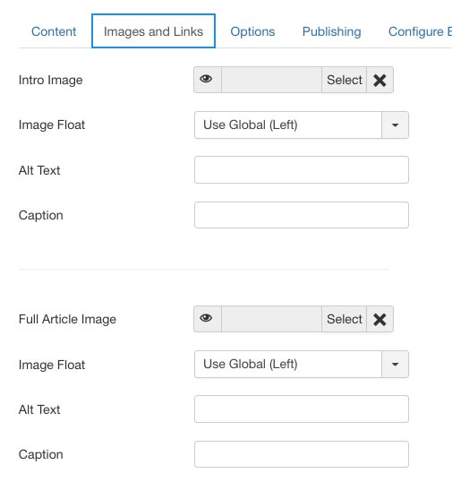
- Choose an image and the position for the intro image
- While on editor, go to "Image and Links"
- Image on full article :
- While on editor, navigate to icon image :

- pick the image
- define the iamge position with "image float" option
- Click Insert
- While on editor, navigate to icon image :
5. Article Manager
5.3 Project Page
Creating an article for project page can be adding using similar methods with default joomla article. But while on editor, there should be an extra tab generated from custom field to collect and display extra information regarding the project. After creating some project's articles, follow this steps to generate project page
- Use the similatr method to create new menu
- Go to Page Display tab
- On page class field, use overlay-blog project class
- Then save this menu and try to access it from the frontend
5. Article Manager
Untuk menambah, mengubah dan menghapus CURRENT PROJECT, pastikan untuk berada di halaman Content > Articles
5.4 Current Project
Mengelola konten Current Project sama dengan cara mengelola Projet Experience List, bedanya hanya di langkah ke-6 dan ke-7
- Klik New
- LANGSUNG ke category dan tentukan kategorinya ke kategory project
- Ketikkan artikel di bagian textarea yang telah dilengkapi dengan WYSIWYG editor.
Hindari copy paste langsung dari text editor seperti MS. Word ataupun OpenOffice
- Kemudian klik tab projects dan isikan informasi yang diperlukan

- Pastikan status artikel telah terpublished
- Pastikan Access artikel diset ke Registered. Ketika project telah selesai, access ini bisa disetting ke publick
- Pastikan Featured artikel diset ke Yes. Ketika project ini selesai, Featured harus disetting ke NO
- Isikan tags jika diperlukan, hal ini bisa dimanfaatkan agar ada keterkaitan dengan project lain yang memiliki tags yang serupa. Misalnya diberi tags oil and gas, agar ketika di halaman services oil and gas project-project dengan tagging oil and gas akan muncul
- Klik save
6. Manajemen Pengguna
Untuk mengelola pengguna, harus masuk ke menu Users > manage. Dalam website ini, setiap rekanan yang registrasi di website harus mendapat persetujuan dari admin website.
Fitur ini sangat berguna untuk bagi rekanan, agar bisa memantau progress projectnya yang disetting secara private untuk konsumsi umum. Berikut cara mengelolanya
- Masuk ke menu Users > manges
- Di kolom activation, User yang baru mendaftar akan ditandai dengan tanda silang. Klik tanda silang tersebut hingga menjadi tanda centang, maka user yang baru mendaftar tadi akan langsung aktif dan bisa memantau progress projectnya yang sedang dikerjakan oleh PT. HTSI di menu current project
8. Contact Detail
8.1 How to update contact datail
- Go to ke Compoenents > Contacts
- Click Contact Us, and adjust the details
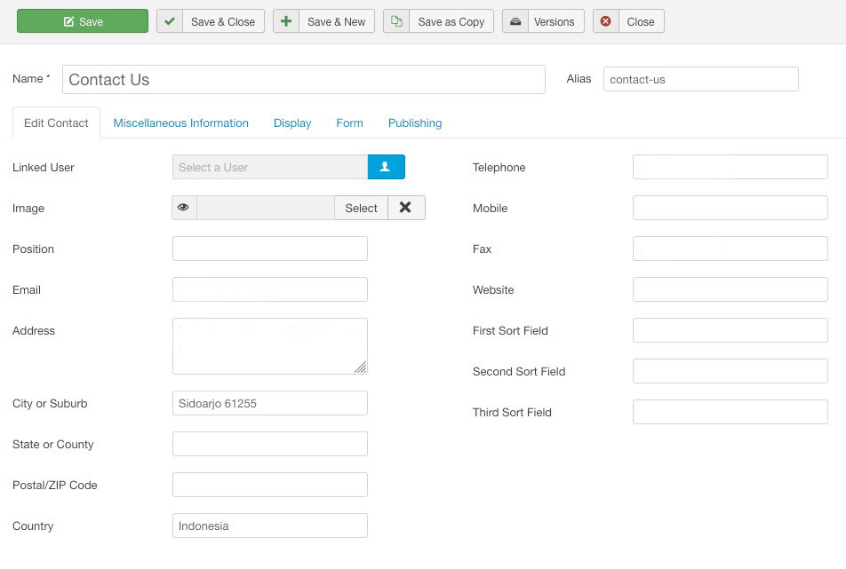
8. Backup
Dimohon untuk melakukan backup secara rutin, minimal sebulan sekali, untuk meminimalisir sesuatu yang tidak diinginkan
Fitur backup bisa diakses melalui Components > Akeeba Backup > backup Now. Selanjutnya, Hasil proses backupnya bisa dilihat di Components > Akeeba Backup > Manage Backups
Tidak disarankan untuk merubah-rubah settingan di fitur back up ini kecuali yang telah disebutkan diatas